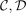
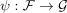
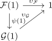

triangle identity of a monoidal natural transformation
1. Proposition
let

be monoidal categories and be monoidal functors and
be monoidal functors and

a monoidal natural transformation
Then following diagram commutes

let

be monoidal categories and be monoidal functors and

a monoidal natural transformation
Then following diagram commutes
